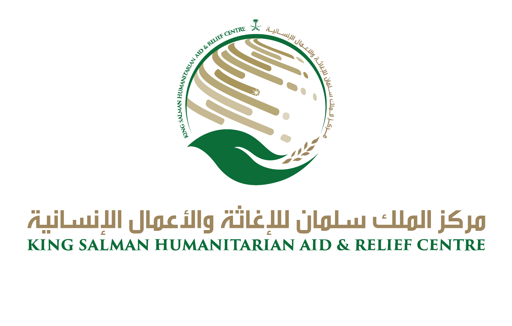
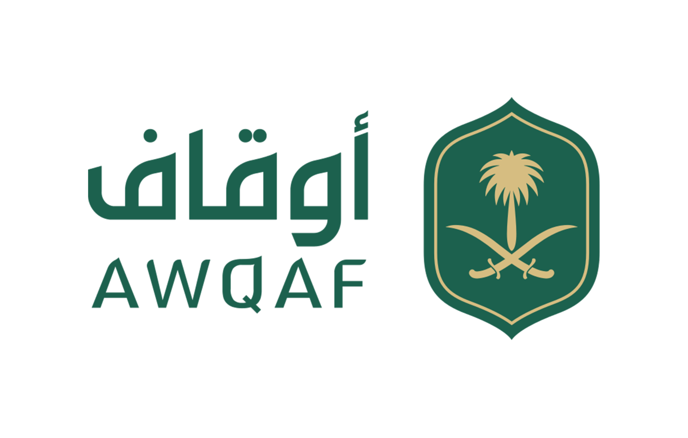
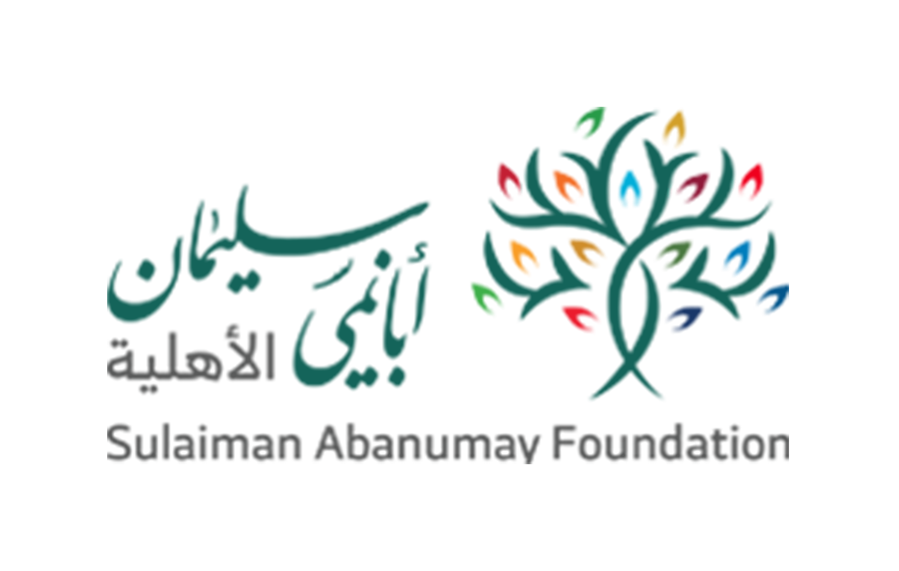

عرض 8 فرصة من إجمالي 24 فرصة

منحة تمكين المنظمات غير الربحية الناشئة
برنامج دعم شامل للجمعيات الناشئة يشمل التمويل والتدريب والإرشاد لتعزيز قدراتها المؤسسية وتحقيق أثر تنموي مستدام.

برنامج دعم مشاريع الأمن الغذائي
دعم المشاريع التي تسهم في تحقيق الأمن الغذائي وتطوير القطاع الزراعي من خلال حلول مبتكرة ومستدامة.

منحة التحول الرقمي للمنظمات غير الربحية
دعم رحلة التحول الرقمي للمنظمات غير الربحية من خلال توفير الأدوات والتدريب والاستشارات التقنية المتخصصة.

برنامج تعزيز صحة المجتمع
دعم المبادرات الصحية المجتمعية التي تسهم في تعزيز الوعي الصحي والوقاية من الأمراض المزمنة.

منحة تمكين المرأة في ريادة الأعمال الاجتماعية
برنامج متخصص في دعم المشاريع الريادية النسائية التي تحقق أثراً اجتماعياً إيجابياً في المجتمعات المحلية.

برنامج البيئة والاستدامة
تمويل المشاريع البيئية التي تسهم في حماية البيئة وتعزيز ممارسات الاستدامة في المجتمعات المحلية.
برنامج دعم المبادرات الإنسانية الدولية
دعم المنظمات غير الربحية في تنفيذ مشاريع إغاثية وإنسانية في المناطق المتضررة حول العالم.
برنامج دعم التعليم في المناطق النائية
دعم المبادرات التعليمية التي تستهدف تحسين جودة التعليم في المناطق النائية وتوفير الموارد التعليمية.